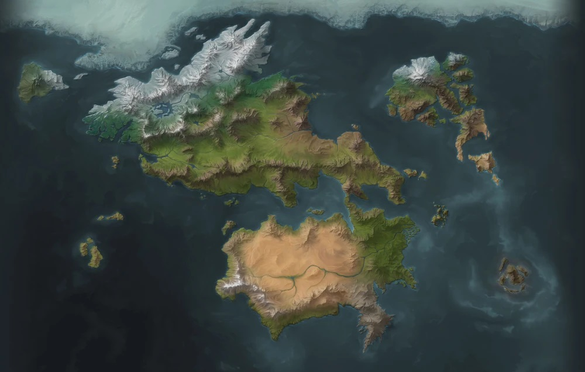
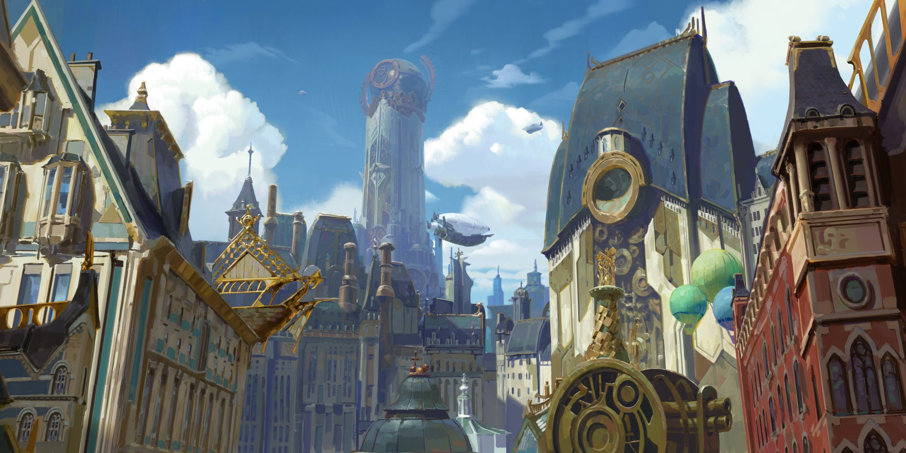
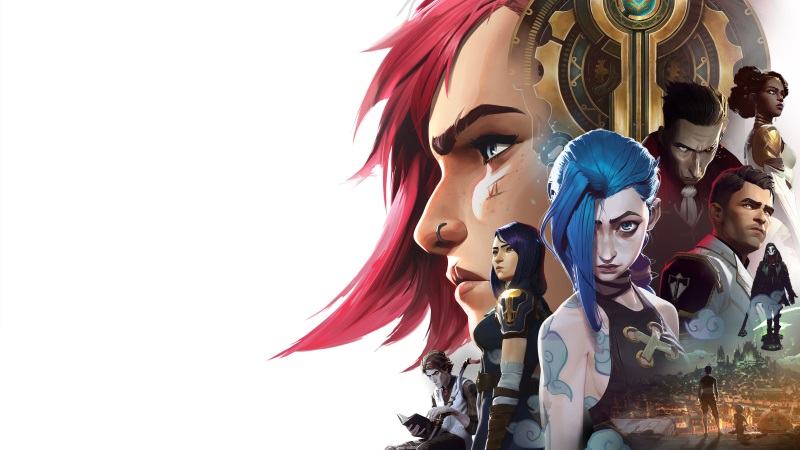

Arcane: League of Legends is the hit Netflix animated show which follows the story of 2 sisters, Vi and Powder, who find themselves caught up in an escalating conflict between the sister cities of Piltover and Zaun. Enter into the steampunk world of Runeterra and see their story unfold as they fight for their survival and how it shapes their future!

The World of Arcane
Arcane is set in the world of Runeterra, a rich and diverse world full of numerous sapient species spread across it's 3 continents, Valoran, Shurima, and the Camavoran continent, and it's 2 vast oceans with scattered archipelagos.
Click on the continent names to learn more about them!
The first season of Arcane takes place within Valoran and below we will explore the 3 locations that have been revealed so far.
Map of Runeterra
Season 1 Locations

Piltover
Piltover is the first of the sister cities to be revealed
Zaun
While Zaun is the sister city of Piltover it is a stark contrast to it's high class society and innovation.
Noxus
Noxus is the original home of Mel

Characters
Arcane is filled with interesting and diverse characters, and the writers have done a great job